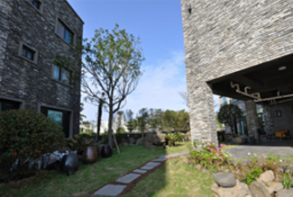
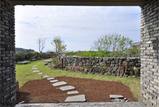
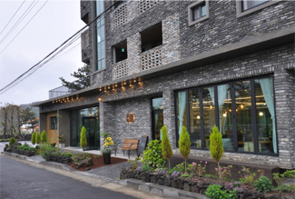
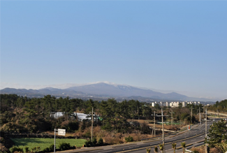
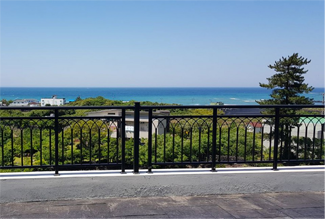
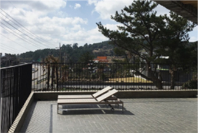

제주플레이스 소개
제주플레이스는 2018년 3월에 오픈한 신축건물입니다.
A동, B동으로 나눠져있고, A동 1층에는 북카페 제주카페가 함께하고 있습니다.
회색벽돌로 되어있어 운치가 있고 옥상에서 앞뒤로 서우봉, 바닷가, 다려도, 한라산 뷰를 만나실 수 있습니다.
바로 옆에는 너븐숭이 4.3 기념관이 있고 4.3길과 올레 19코스가 있습니다.
주변이 조용하고 1층 카페에서 맛있는 커피와 함께 책도 읽을 수 있어서
독서와 산책으로 쉬시다가시려는 분에게 최적입니다.



제주플레이스 정원
제주플레이스 뒤뜰 정원
제주북촌 카페



한라사 전경
옥상 바다 전경
A동 2층 테라스
객실내취사가능한 형태의 펜션입니다.
1.5룸 (둘이자기 좋은방)은 침실 하나, 거실하나로 되어있고 침실 발코니와 거실 발코니가 별도로 되어 있습니다.
원룸(혼자자기 좋은방)은 거실이 없는 형태로 조리가 가능한 구조입니다. 역시 발코니가 되어 있습니다.
원룸은 통창으로 되어 있는 방과 일반창으로 되어 있는 방으로 나눠져있습니다.
건물 뒤쪽으로 산책할 수 있는 작은 정원이 꾸며져 있고 건물 옥상에서도 주변뷰를 감상하실 수 있습니다.
건물 뒤쪽 정원과 2층 테라스가 있는 곳에는 썬베드가 준비되어 있으니 편히 쉬었다 가세요.
1.5룸 (둘이자기 좋은방)은 침실 하나, 거실하나로 되어있고 침실 발코니와 거실 발코니가 별도로 되어 있습니다.
원룸(혼자자기 좋은방)은 거실이 없는 형태로 조리가 가능한 구조입니다. 역시 발코니가 되어 있습니다.
원룸은 통창으로 되어 있는 방과 일반창으로 되어 있는 방으로 나눠져있습니다.
건물 뒤쪽으로 산책할 수 있는 작은 정원이 꾸며져 있고 건물 옥상에서도 주변뷰를 감상하실 수 있습니다.
건물 뒤쪽 정원과 2층 테라스가 있는 곳에는 썬베드가 준비되어 있으니 편히 쉬었다 가세요.
주식회사 제주플레이스 | 제주플레이스 펜션 | 주소 제주 제주시 일주동로 457, 1485
사업자등록번호. 740-85-011192 | 대표전화. 064-782-1785 | 예약전화. 064-782-1785
© 제주플레이스 All Rights Reserved